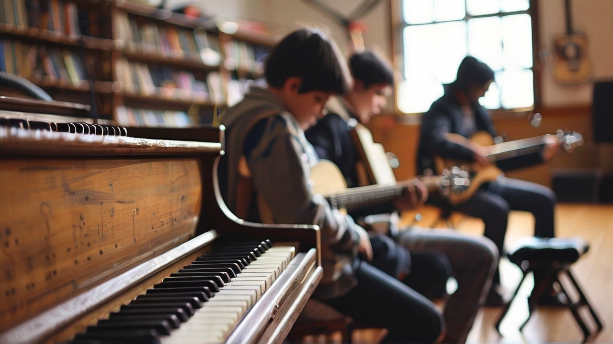

En el Instituto de Música Nacional Argentino invitamos a todos los estudiantes
a unirsenos en todo tipo de actividades relacionadas a la música, canto y cultura musical Argentina. La puerta esta abierta a todos los alumnos y alumnas, sin importar el género, raza, creencia o
nacionalidad. Disponemos de todo tipo de instrumento musicales para ayudar al alumnado a enriquecer
sus conocimientos en el área músical.
Disponemos también de múltiples sucursales para alojar más de cientos de alumnos y alumnas y también
un campus virtual para permitir el trascurso de las clases independientemente de las condiciones externas
para así asegurar que los alumnos no se pierdan de ninguna clase a pesar de sus problemas personales
Descubre nuestras sucursales:
Historia y Filosofía
Nuestro Instituto fue inaugurado el 7 de Marzo de 1972, con su primera sucursal abriendo
en Buenos Aires, Hurlingham. Disponiendo de un total de 10 aulas para 150 alumnos. Trás su apertura,
el Instituto de Música Nacional Argentino ha expandido sus horizontes
abriendo varías sucursales más alrededor del país.
La intención de este Instituto es poder ayudar a los estudiantes a expandir sus conocimientos músicales,
probar nuevas experiencias en el entorno de la música y mejorar el ámbito social por medio de compartir
momentos con gente nueva para demostrar lo valiosa que es la cultura.
Nuestros Cursos:
Cursos de Canto
En nuestro instituto ofrecemos cursos de Canto para ayudar a nuestro alumnado
a probar sus intereses músicales en lo que a canto se refiere, se aceptan a alumnos y
alumnas de todas las edades y niveles, tanto inicial, intermedio como avanzado.
Este curso esta orientado a todas aquellas personas que esten interesadas
en participar en una orquesta donde la integración y el amor a la música son las premisas
básicas. En este curso pueden anotarse todos los interesados que tengan algún conocimiento
previo de su instrumento de preferencia.
Cursos de introducción a la Música
Este es un curso de introducción a la música donde aprenderán a leer partituras
y ejecutar algunos instrumentos músicales básicos, como por ejemplo: Guitarra, Ukelele, Instrumentos
de Percusión, etc.

Cursos de Violín
En este curso se le enseñará al alumnado todo lo que tienen que saber sobre
el violin, desde las partituras a la teoría a la técnica.